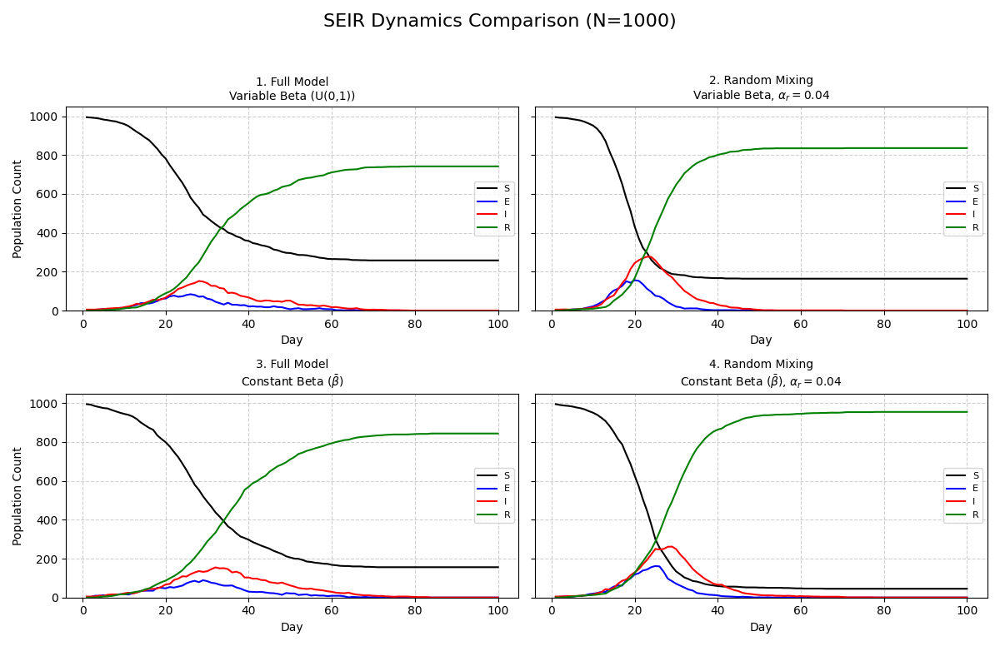

SEIR modelling
Aleksander Majkowski
Modeling the spread of infectious diseases is a cornerstone of public health planning. While many epidemiological models assume a "perfectly mixed" population where anyone can infect anyone else, reality is far more structured. People interact within small, dense groups like households and wider, but regular, social networks. For this project, our goal was to build a more realistic disease simulator from the ground up to explore how these social structures impact an epidemic's trajectory.
I used the classic SEIR (Susceptible, Exposed, Infected, Recovered) framework, but instead of solving a simple set of equations, I developed an agent-based model. This simulates N individuals, each with unique characteristics and connections, providing a richer, more dynamic picture of disease transmission.
The model incorporates three distinct layers of infection:
Household Transmission: High-risk spread among individuals living together.
Network Transmission: Spread through a regular, non-household social contact network.
Random Mixing: A background level of community transmission.
Furthermore, we investigated the effect of population heterogeneity—the idea that some individuals are naturally more socially active than others. We modeled this using a beta parameter for each person, comparing scenarios where beta is variable (different for each person) against scenarios where it is constant (everyone is identical).
To test the impact of these features, we designed a computational experiment comparing four distinct scenarios. We ran our full, multi-layered model and contrasted it against a simplified "random mixing only" model, both with variable and constant beta values. This allows us to precisely measure the effect of social structure and individual behavior on the outbreak's speed, peak, and overall size.
Python code: SEIR.py
import numpy as np
import matplotlib.pyplot as plt
# --- Global Parameters ---
N = 1_000 # Population size
HMAX = 5 # Maximum household size
NC = 15 # Average number of contacts per person (nc)
NT = 100 # Number of days to simulate
PINF = 0.005 # Proportion of initial population to start in I state
DEFAULT_ALPHA = (0.1, 0.01, 0.01) # (alphah, alphac, alphar) - infection rates for household, contacts and general mixing
DELTA = 0.2 # I -> R probability (Infected to Recovered)
GAMMA = 0.4 # E -> I probability (Exposed to Infected)
SEED = 30 # Seed for reproducibility
# --- 1. Household Assignment ---
def generate_households(n, hmax=HMAX, seed=SEED):
"""
Produces an n vector, h, of integers indicating which household each person belongs to.
Household sizes are uniformly distributed between 1 and hmax.
"""
rng = np.random.RandomState(seed)
# Generate household sizes until we cover N people
household_sizes = []
while sum(household_sizes) < n + hmax:
household_sizes.append(rng.randint(1, hmax + 1))
# Create the sequence of household IDs based on sampled sizes
h_list = []
H_id = 1
for size in household_sizes:
h_list.extend([H_id] * size)
H_id += 1
h = np.array(h_list[:n])
# Shuffle the assignments to randomize which person belongs to which household index
rng.shuffle(h)
return h
# --- 2. Network Generation ---
def get_net(beta, h, nc=NC, seed=SEED):
"""
Generates the regular (non-household) contact network.
Returns a list where the ith element is a vector of indices of contacts of person i.
"""
rng = np.random.RandomState(seed)
n = len(beta)
beta_bar = np.mean(beta)
net = [[] for _ in range(n)]
# Pre-calculate the denominator constant for the probability P_ij
denominator = beta_bar**2 * (n - 1)
if denominator == 0 or n <= 1:
return net
# Iterate over all unique pairs (i, j) where i < j
for i in range(n):
for j in range(i + 1, n):
# Check if they are not in the same household
if h[i] != h[j]:
# Calculate probability P_ij
p_ij = nc * beta[i] * beta[j] / denominator
# Check if a link is formed
if rng.rand() < p_ij:
# Store indices (0-indexed)
net[i].append(j)
net[j].append(i)
return net
# --- 3. SEIR Simulation ---
def nseir(beta, h, alink, alpha=DEFAULT_ALPHA, delta=DELTA, gamma=GAMMA, nc=NC, nt=NT, pinf=PINF, seed=SEED):
"""
Implements the SEIR model with household and network structure.
alpha = (alphah, alphac, alphar)
Returns a dictionary of time series for S, E, I, R, and t.
"""
rng = np.random.RandomState(seed)
alphah, alphac, alphar = alpha
n = len(beta)
beta_bar = np.mean(beta)
# Constant for random mixing probability calculation
denominator = beta_bar**2 * (n - 1)
const = (alphar * nc) / denominator if denominator != 0 and n > 1 else 0
# Initialize population state vector x (0: S, 1: E, 2: I, 3: R)
x = np.zeros(n, dtype=int)
# Initialize some infective individuals (State I = 2)
initial_infected_count = int(n * pinf)
if initial_infected_count > 0:
initial_infected_indices = rng.choice(n, size=initial_infected_count, replace=False)
x[initial_infected_indices] = 2
# Storage for results
S = np.zeros(nt, dtype=int)
E = np.zeros(nt, dtype=int)
I = np.zeros(nt, dtype=int)
R = np.zeros(nt, dtype=int)
t = np.arange(1, nt + 1)
# Initial state (Day 1, index 0)
S[0] = np.sum(x == 0)
E[0] = np.sum(x == 1)
I[0] = np.sum(x == 2)
R[0] = np.sum(x == 3)
for day in range(1, nt):
# 1. Transitions I -> R and E -> I
u = rng.rand(n)
x[(x == 2) & (u < delta)] = 3 # I -> R
x[(x == 1) & (u < gamma)] = 2 # E -> I
# 2. S -> E transitions (Infection)
I_indices = np.where(x == 2)[0]
S_indices = np.where(x == 0)[0]
se = np.zeros(n, dtype=bool)
if len(I_indices) > 0 and len(S_indices) > 0:
# --- Mechanism 1: Household infection (S -> E) ---
if alphah > 0:
infected_households = set(h[I_indices])
household_infection_candidates = [j for j in S_indices if h[j] in infected_households]
if len(household_infection_candidates) > 0:
household_infection_candidates = np.array(household_infection_candidates, dtype=int)
r_h = rng.rand(len(household_infection_candidates))
infected_by_household = household_infection_candidates[r_h < alphah]
se[infected_by_household] = True
# --- Mechanism 2: Regular network contact infection (S -> E) ---
if alphac > 0:
network_infection_candidates = set()
for i in I_indices:
for j in alink[i]:
if x[j] == 0:
network_infection_candidates.add(j)
network_infection_candidates = np.array(list(network_infection_candidates), dtype=int)
if len(network_infection_candidates) > 0:
r_c = rng.rand(len(network_infection_candidates))
infected_by_network = network_infection_candidates[r_c < alphac]
se[infected_by_network] = True
# --- Mechanism 3: Random mixing infection (S -> E) ---
# Using the approximation: P_j_total ~ Sum_{i in I} P_ij
if alphar > 0 and const > 0:
sum_beta_i = np.sum(beta[I_indices])
infection_rate_j = beta * const * sum_beta_i
r_r = rng.rand(n)
infected_by_random = (x == 0) & (r_r < infection_rate_j)
se = se | infected_by_random
x[se] = 1 # 3. Apply S -> E transitions
# 4. Record states for the day
S[day] = np.sum(x == 0)
E[day] = np.sum(x == 1)
I[day] = np.sum(x == 2)
R[day] = np.sum(x == 3)
return {'S': S, 'E': E, 'I': I, 'R': R, 't': t}
# --- 4. Plotting Function ---
def plot_nseir(results_list, titles, n_pop, filename="seir.png"):
"""
Plots the dynamics of S, E, I, R states for multiple scenarios side-by-side.
Saves the plot to a file.
"""
_, axes = plt.subplots(2, 2, figsize=(12, 8), sharey=True) # Adjust subplot grid to be 2x2
axes = axes.flatten() # Flatten the 2D axes array to a 1D array for easy iteration
max_n = n_pop
for i, results in enumerate(results_list):
ax = axes[i]
t = results['t']
ax.plot(t, results['S'], label='S', color='black')
ax.plot(t, results['E'], label='E', color='blue')
ax.plot(t, results['I'], label='I', color='red')
ax.plot(t, results['R'], label='R', color='green')
ax.set_title(titles[i], fontsize=10)
ax.set_xlabel("Day")
# Set y-label only for the first column of subplots
if i % 2 == 0:
ax.set_ylabel("Population Count")
ax.set_ylim(0, max_n * 1.05)
ax.legend(loc='center right', fontsize=8)
ax.grid(True, linestyle='--', alpha=0.6)
plt.suptitle(f"SEIR Dynamics Comparison (N={n_pop})", fontsize=16)
plt.tight_layout(rect=[0, 0.03, 1, 0.95])
plt.savefig(filename)
return filename
# --- 5. Scenario Execution and Comparison ---
def run_scenarios(n=N, seed=SEED):
h = generate_households(n, hmax=HMAX, seed=seed) # 5a. Setup common structure
# 5b. Generate Variable Beta vector (U(0, 1))
rng_beta = np.random.RandomState(seed)
beta_variable = rng_beta.rand(n)
beta_bar = np.mean(beta_variable)
beta_constant = np.full(n, beta_bar) # 5c. Generate Constant Beta vector
results = []
titles = []
# --- Scenario 1: Full model, Variable Beta ---
print("Running Scenario 1: Full Model (Variable Beta)")
alink_1 = get_net(beta_variable, h, nc=NC, seed=seed)
results_1 = nseir(beta_variable, h, alink_1, alpha=DEFAULT_ALPHA, seed=seed)
results.append(results_1)
titles.append(f"1. Full Model\nVariable Beta (U(0,1))")
# --- Scenario 2: Random Mixing only (alpha_r=0.04), Variable Beta ---
ALPHA_RANDOM_ONLY = (0, 0, 0.04)
print("Running Scenario 2: Random Mixing (Variable Beta)")
results_2 = nseir(beta_variable, h, alink_1, alpha=ALPHA_RANDOM_ONLY, seed=seed)
results.append(results_2)
titles.append(f"2. Random Mixing\nVariable Beta, $\\alpha_r=0.04$")
# --- Scenario 3: Full model, Constant Beta ---
print("Running Scenario 3: Full Model (Constant Beta)")
alink_3 = get_net(beta_constant, h, nc=NC, seed=seed)
results_3 = nseir(beta_constant, h, alink_3, alpha=DEFAULT_ALPHA, seed=seed)
results.append(results_3)
titles.append(f"3. Full Model\nConstant Beta ($\\bar{{\\beta}}$)")
# --- Scenario 4: Random Mixing only (alpha_r=0.04), Constant Beta ---
print("Running Scenario 4: Random Mixing (Constant Beta)")
results_4 = nseir(beta_constant, h, alink_3, alpha=ALPHA_RANDOM_ONLY, seed=seed)
results.append(results_4)
titles.append(f"4. Random Mixing\nConstant Beta ($\\bar{{\\beta}}$), $\\alpha_r=0.04$")
plot_filename = plot_nseir(results, titles, n_pop=n) # plotting
print(f"\nPlot saved as: {plot_filename}")
if __name__ == "__main__":
run_scenarios(n=N, seed=SEED)
The results from our simulation clearly visualize the profound impact of social structure on disease dynamics.
SEIR Plots

As we can see, Random Mixing models (Plots 2 and 4) produce outbreaks that are rapid and intense.
The number of infected individuals (red curve) peaks sharply and quickly, leading to the rapid depletion of the
susceptible population (black curve). This represents a worst-case scenario where the disease spreads unchecked
through an unstructured population.
In contrast, Full Models (Plots 1 and 3), which include household and network structures, tell a different story.
The epidemic unfolds more slowly, the peak of infections is significantly lower and broader, and a larger portion
of the population remains susceptible by day 100. This demonstrates that realistic social clustering acts as a natural
brake on transmission, a critical insight for public health interventions. The difference between
variable and constant beta is more subtle, but highlights how individual behavioral differences can further shape the curve.